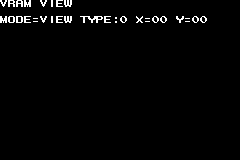

American Bass Challenge (USA)
Stateless / Passcode Debug Menu Patch 💾 MultiBoot 🎮 4P Link
Cartridge Identity
- Game Code
AABE(FamilyAAB)- Header Title
AMERICA_BASS- Maker / Revision
41/ rev0- ROM Size
- 4.0 MiB (4,194,304 B)
- Save Media
None / Unknown- SHA-256
294e7c34a9d2ee37bc005368fcc268dfdc0dfaaade8adddae5d25e2fa33ee418- Engine / SDK Group
comm-001(196 families)
Screenshots
Debug Menu Re-Enablement Patch (.ips)
Download AABE-debug.ips (22 B IPS / 4 B delta)
- Hook Mechanism
thumb_branch_override· Patch branch at 0x08000262 (beq -> b #0x8000276) to branch directly to debug menu launcher and nop spinloop at 0x08000baa- IPS SHA-256
6d772fcaff387ed1ba293da5083d75c30a52795e9ffc5f88d8dba94cfcca7c9e
gbakit patch apply AABE-debug.ips original.gba patched-debug.gba

Link Cable & Multiplayer Communications
This title contains detected communication capabilities: 💾 MultiBoot 🎮 4P Link.
Detailed protocol specifications, SIO registers, Joybus commands, and MultiBoot sequences are documented in the Link & Multiplayer Reference.
- Multi-Player SIO (4P)
- 16-bit ring network · SIOCNT (
0x04000128) literals:0x012d10,0x012db4,0x024afc· SIODATA32/SIOMULTI0 (0x04000120) literals:0x02503c,0x025158,0x0251a0 - Single-Cart MultiBoot
- Single-Cartridge MultiBoot (Download Play) client/server handler · Thumb SWI 0x25 (
0xDF25):0x02917a,0x0a7ea4,0x196ae4,0x2391dc
Cartridge Storage Architecture: Stateless / Passcode
Zero non-volatile battery hardware: This cartridge PCB contains ROM only (no SRAM, Flash, or EEPROM chips). Progression is preserved via on-screen passcodes or session-only gameplay. No
.sav file is generated or required.
ROM Assets, Compression & Audio
- BIOS Compression
- LZ77 (
0x10): 498 streams · RLE (0x30): 0 streams - ROM Pointer Tables
- 24 tables (11 pointing to validated compressed streams)
- SDK Backup Tags
EEPROM_V122
Text, Fonts & Scene Data
- Primary Text Encoding
- LZ77-compressed ASCII (
4ASCII strings ·3LZ77 ASCII blocks) - Font & VWF Indicators
- VWF Width Table 1bpp Font · BIOS SWIs: BitUnPack
0x10:77· LZ770x11/12:60· Huffman0x13:13· RLE0x14/15:32 - Scene & Packaging
16ROM pointer tables (≥32 entries,5≥200) ·1relativeu32TOCs ·142OAM metasprite hits
Hardware MMIO Subsystems
ppu_display0x80014a0,0x8001648
Regional Variants & Revisions (Family AAB)
- Super Black Bass Advance (Europe) (
AABP, 4 MiB) - Super Black Bass Advance (Japan) (
AABJ, 4 MiB)